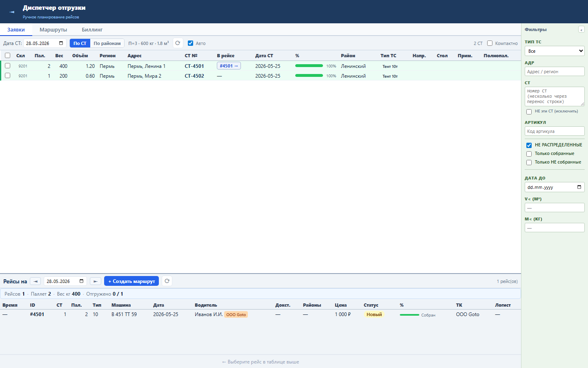
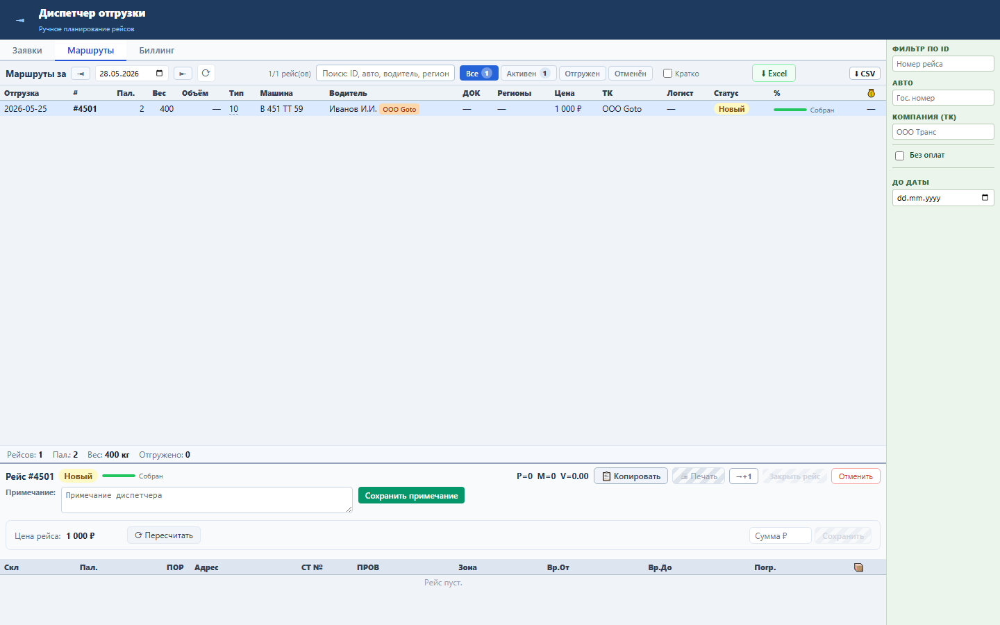

Блок помогает диспетчеру быстро понять, в каком рейсе находится уже распределённая СТ.
Кнопка строится по полю TRANSTASK_ID в строке СТ. Если рейс уже загружен, он выбирается из текущего списка; если нет, UI может запросить GET /tasks/{id}.
В строке распределённой СТ появляется кнопка #ID →. Нажатие переключает на вкладку «Маршруты» и выбирает нужный рейс.
#ID →.

Проверка: functional, UI smoke и load gate пройдены.